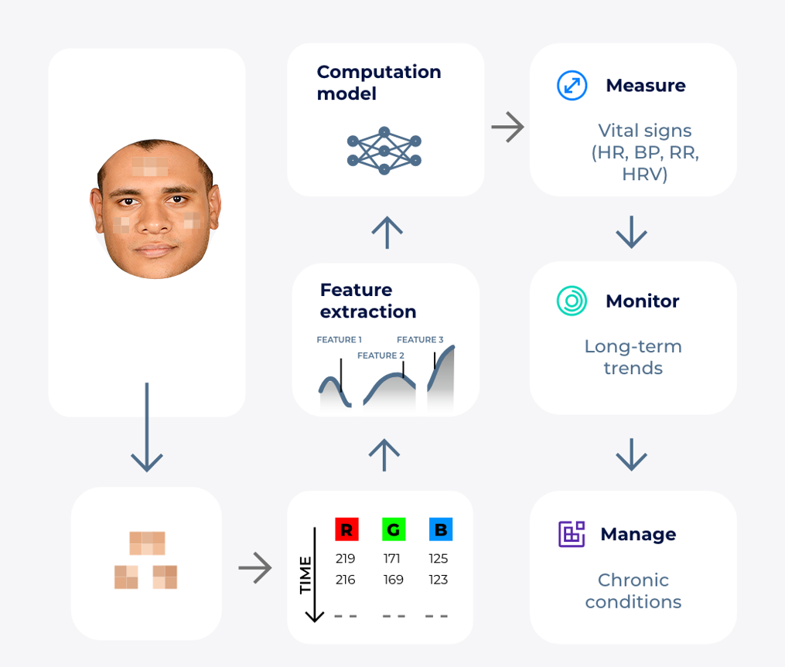
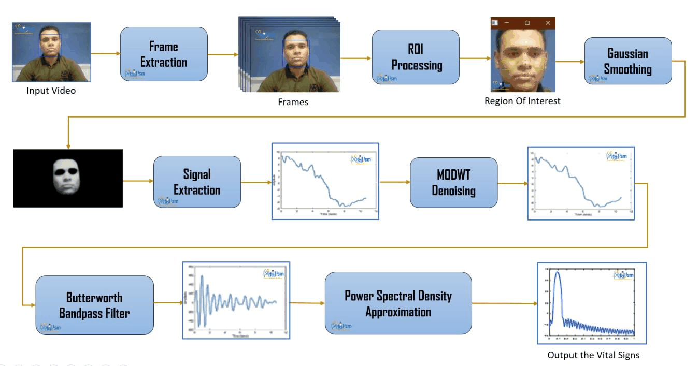
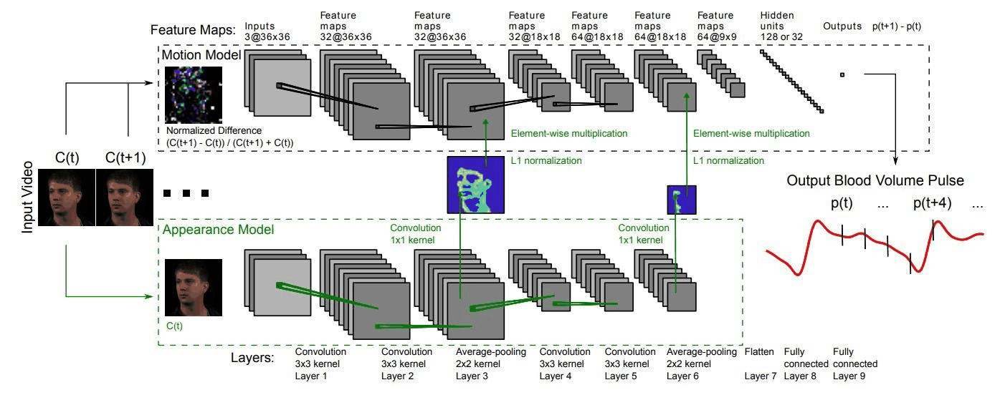
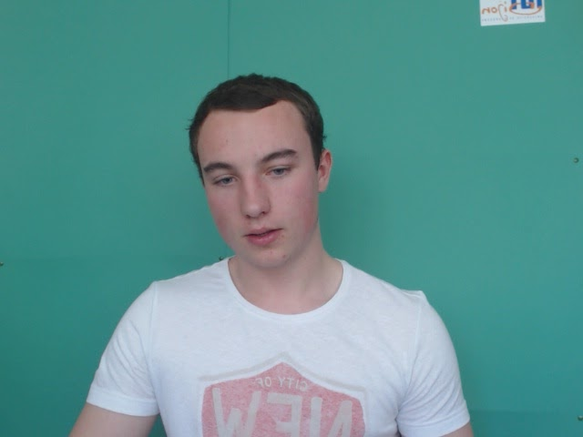

UBFC-rPPG
The UBFC dataset contains 42 videos. Each person sits about 1 meter away from the camera, recorded at 30 fps with a resolution of 640×480.

Vitalism is an end-to-end framework based on remote photoplethysmography (rPPG) that measures vital signs remotely and in near real time — using only a face video captured with a smartphone camera in a natural environment.

The pipeline below shows our advanced video-processing workflow, which combines multiple techniques to extract a robust BVP (blood volume pulse) signal.

Click to enlargeOur main approach relies on deep learning. We carried out measurements with deep-learning methods on the Pulse Rate Detection (PURE) and UBFC-rPPG datasets to compare our results, and we hope that deep learning will reduce error rates as a result of these measurements.

Click to enlargeVitalism uses advanced computer vision and signal processing to monitor vital signs remotely. A key technique integrated into our system is Eulerian Video Magnification (EVM), developed by MIT in 2012, which magnifies small changes in videos.
For example, it can reveal your heartbeat by highlighting tiny color changes in your skin. EVM amplifies subtle color and motion changes in videos to extract physiological signals such as heart rate and respiration — allowing non-contact measurement of vital signs with a standard smartphone camera.
The process involves spatial decomposition, temporal filtering and amplification of video frames to highlight imperceptible changes in skin tone caused by blood flow. It runs efficiently in real time, making it practical for healthcare and telemedicine applications.
Two public rPPG benchmarks we used to run our measurements and compare our results.
The UBFC dataset contains 42 videos. Each person sits about 1 meter away from the camera, recorded at 30 fps with a resolution of 640×480.
PURE consists of 10 persons (8 male, 2 female) recorded in 6 different setups.

Steps 1 and 2 of the PURE dataset request — click a page to enlarge it.


The application does not save the images or input video streams used for measurement. Final measurement results are saved for historical purposes and user convenience. All results are secured, encrypted, and accessible only to users and to account admins with permission, which can be managed in account preferences.
No images or video stored. Only final results are kept — secured and encrypted.
Vitalism is fully committed to the privacy and security of our customers and users, and operates in compliance with GDPR requirements.

Have a specific use case in mind for Vitalism technology? Let’s set up a call and talk it through.